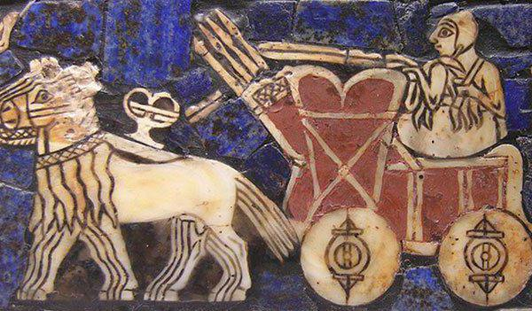

Человечество сталкивалось с решением проблем смазки деталей и приспособлений с давних времен. Автохимия – препараты химической промышленности для обслуживания и ремонта систем транспортного средства, прежде всего двигателя, трансмиссии и кузова. Еще в Древнем Египте, примерно в 2400 году до нашей эры, при транспортировке египетского каменного колосса на специальных деревянных салазках (рис. 1) между полозьями салазок и такими же деревянными болванами вводили особый смазочный материал на основе воды с добавлением оливкого масла (в качестве присадки) и ила из реки Нил (в качестве антифрикционной добавки).
Оливковое масло также применялось в опорах колодезных воротов времен бронзового века (V век до н. э.) для снижения силы трения и предотвращения неприятного скрипа при подъеме воды на поверхность. Значительно позже, ориентировочно в 23…79 годах уже нашей эры Плиний Старший ( С. Plinius Secundus ) составил один из первых списков некоторых растительных и животных масел, пригодных к применению в качестве смазочных материалов. Так что «список Плиния» можно считать первым каталогом смазочных материалов в мире. Как гласит китайская пословица XVII века, «… одна капля масла в подшипник делает повозку, а тысяча капель – корабль, готовым к эксплуатации ». Основоположником современной науки о трении считается известный французский ученый и военный инженер Кулон ( Coulomb ) Шарль Августин, в 1781 году опубликовавший свою знаменитую книгу «Теория простых машин», которую можно считать одним из первых изданий по трибологии.